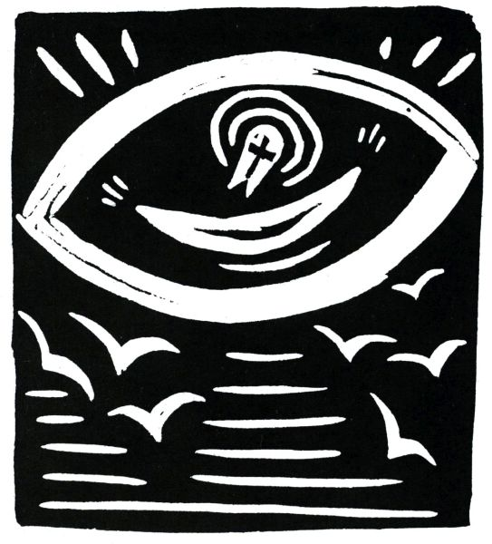
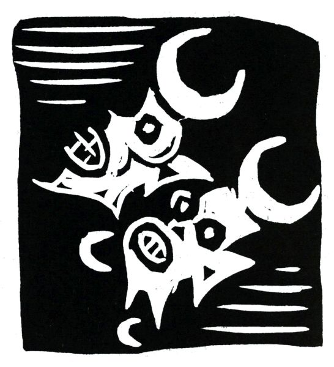
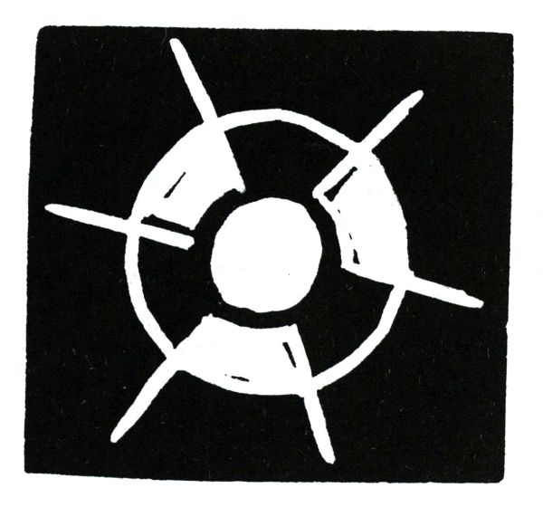

Pásmo
Tím starým světem přec jsi znaven na konec
Pastýřko Eiffelko jak bečí stádo mostů dnes
Řecký a římský starověk se ti už přežily
Zde starodávně se tváří i automobily
Jen náboženství zůstalo nové ve starých věcí tříšti
Zůstalo zcela prosté jak hangáry na letišti
Jediné neantické v Evropě křesťanství je
Evropan nejmodernější jste vy ó papeži Pie
A tebe zdržuje stud když okna na tebe hledí
Vstoupiti do kostela a jíti ke zpovědi
Čteš letáky ceníky plakáty jež nahlas zpívají
Toť poesie dne a prosu dne žurnály dávají
Sešity po šestáku o detektivech kteří prosluli
Portréty slavných mužů a steré tituly

Viděl jsem dnes a jméno už nevím pěknou ulici
Novou a čistou byla to sluneční polnice
Šéfové dělnice a krásné písařky z bureau
Z pondělí do soboty čtyřikrát denně tudy se berou
Z rána tu třikrát tovární píšťala zní
Chraptivý zvon zde zaštěká k poledni
Nápisy na zdech a tabulích štíty a vyhlášky
Vřeští a štěbetají jak o závod s papoušky
Mám rád tu pěknou ulici průmyslu a píle
Ležící v Paříži mezi třídou des Ternes a ulicí Aumont-Thiéville.
Hle mladá ulice a ty sám jsi jen malé dítě
Tvá matka jinak než modře a bíle nešatí tě
Jsi velmi zbožný a René Dalize tvůj první kamarád
Má stejně s tebou církevní pompu nade vše rád
Je devět večer plyn stažen do modra tajně se kradete z ložnice
Po celou noc se v kolejní kapli modlíte
Zatím co věčná spanilá hlubina ametystná
Oblévá na vždy planoucí glorii Krista
Toť krásná lilie již všichni pěstíme
Toť rusovlasá pochodeň jež větrem nehasne
Toť bledý a nachový syn bolestiplné ženy
Toť strom vždy modlitbami všemi přetížený
Toť dvojmocnina cti a věčnosti
Toť hvězda o cípech šesti
Toť Bůh jenž v pátek mře a v neděli vzkříšen jesti

Toť Kristus který k nebi lépe než letci vzlétá
Jemu náleží podnes výškový rekord světa
Kristus panenka oka
Dvacátá panenka věků v tom on se vyzná
A změněn v ptáka náš věk jak Ježíš nahoru letí
Ďáblové v propastech zvedají hlavu by mohli naň pohleděti
Praví že napodobí co uměl už Šimon kouzelník
Křičí že zná-li létat má slouti záletník
Andělé létají lehce kolem hezkého letce
Ikarus Enoch Eliáš Apollonius z Thyany
Kol prvního létadla krouží u nebeské brány
Uctivě pouštějí ty jež unáší Svatá Eucharistie
Ty kněze kteří věčně stoupají pozvedajíce hostie
Avion s křídly nesloženými se snáší a klesá
Ty miliony vlaštovek přilétnou na nebesa
Letmo se blíží havrani sovy sokoli naši ptáci
Z Afriky přicházejí ibisi marabuti plameňáci
Pták Noh jemuž básně a pohádky hlásají slávu
V pařátech nese leb Adamovu první hlavu
Z obzoru letí orel a vyráží velký křik
A z Ameriky došel malý kolibřík
Z Číny sem přišli pihi dlouzí a pružní
Ti mají jen po jednom křídle a létají v párech družni
Pak ejhle holubice duch neposkvrněný sám
Jejž provází lýrovec a tisícioký páv
A fénix hranice jež sama se zapálí
V svém žhavém popeli na chvíli vše zahalí
Sirény opustily své nebezpečné úskaliny
A chvátají krásně zpívajíce všecky tři

A všichni orli fénix i pihi z Číny
Se s létacím strojem svorně pobratří
Nyní ty kráčíš sám davem po Paříži
Kol tebe stáda autobusů řvou řičí a víří
Bolestná úzkost lásky hrdlo svírá ti
Jak bys už nikdy se neměl lásky dočkati
Vstoupil bys do kláštera kdybys žil v dávném čase
Když na rtech si najdete modlitbu vy stydíte do ruda se
Sobě se vysmíváš a smích tvůj plá výhní pekelnou
Jiskřičky jeho zlatí života tvého dno
Toť obraz visící v temnu galerie
A vidět jej z blízka ti třeba chvílemi je
Dnes jdeš po Paříži ženy jsou krví znamenány
Bylo to na sklonku krásy jen nerad toho vzpomínám
Z koruny žhavých plamenů pozřela na mne Panna v Chartres
Krev vašeho Svatého Srdce mne zalila na Montmartru
Jsem chor slyše ta slova požehnaná

Láska jíž trpím je má choroba tajná
A obraz který tě posedl ti pomůže přežít úzkost a bdění
Vždy u tebe dlí ten obraz jenž prchá k nevrácení
U Středozemního moře jsi nyní na pobřeží
Pod citroníky jež celý rok kvetou svěží
S přáteli svými se projíždíš ve člunu
Jeden je z Nizzy dva z Turbia jeden z Mentonu
Sepií hlubinných se děsí oči naše
A v chaluhách plují ryby obrazy Mesiáše
Jsi v zahradě hospůdky v okolí Prahy
Cítíš se zcela šťasten na stůl růži ti dali
A místo abys psal svou povídku lenošíš pohříchu
Hledě na mandelinku spící v růžovém kalichu

V achátech Svatovítských zříš zděšen své vlastní rysy
Na smrt jsi smuten byl v ten den kdy sebe v nich objevil jsi

Podoben Lazaru kterého světlo drtí
Pozpátku točí se ručičky hodin v židovské čtvrti
A ty couváš ve vlastním životě pomalu
Jda na Hradčany nahoru a poslouchaje k večeru
Jak v hospodách české písně zpívají
Hle jsi uprostřed melounů v Marseilli
Hle jsi v Koblenci v hotelu s obrem na vývěsní tabuli
Hle sedíš v Římě pod japonskou mišpulí
Hle jsi v Amsterodamu s dívkou jež je oškliva a tobě hezká se zdá
Říká že se brzo se svým studentem v Leydech sezdá
Tam najímají pokoje Cubicula locanda v latině
Vzpomínám toho tři dny jsem tam byl a v Goudě neméně
Jsi v Paříži od soudce vyslýchán
Jak zločinec zatčen a do vězení dán
V bolestných cestách i šťastných jsi proběhl kus světa
Dřív než jsi postřehl lež a svoje leta
V dvaceti láskou trpěl jsi a ve třiceti zas

Jak blázen žil jsem a ztratil jsem svůj čas
Na své ruce se už netroufáš podívat a stále chce se ti zaplakat
Nad sebou nade vším co zděsilo tě nad ní kterou mám rád
Uslzen vidíš chudáky emigranty odjížděti
Věří v Boha modlí se ženy kojí své děti
Jich zápach plní síň nádraží Saint Lazar
Jako tři králové věří ve svou hvězdu v budoucí zdar
Doufají, že v Argentině zbohatnou velice
A domů se vrátí nesouce s sebou tisíce
Ty rodiny nesou praporek červený jako vy srdce své
Ten praporek a naše sny jsou stejně přízračné
Někteří z emigrantů zůstanou a pobývají tu
V děrách ulice des Rosiers nebo des Écouffes
Často jsem zřel je večer jdou se ven nadýchat vzduchu
Zřídka se pohnou z místa jako figurky v šachu
Nejvíce jsou to Židé a ženy jich s parukami
Sedí bezkrevné a hlídají temné krámy
Stojíš nad zinkovým plechem ve výčepu ochlastů
Popíjíš mezi nešťastníky kávu za dva sous
Jsi pozdě k ránu ve velikém restaurantu
Zpívá se tančí pije se šampaňské
Ty dívky nejsou zlé a mají své starosti přec
I od té nejošklivější svou bolest zakusil milenec
Je to dcera městského strážníka prý z Cannes
Neznám její ruce jsou tvrdé a rozprýskané
Mám soustrast nesmírnou se švy jejího břicha

Pokorně dávám svá ústa ubohé dívce se strašným smíchem
Jsi sám jitro přichází
Mlékaři zvoní bandaskami v ulicích
Noc se vzdaluje jako míšenka přesličná
Toť Léa pozorná či Ferdina falešná
A ty piješ ten líh palčivý jako života bol
Tvého života jejž piješ jak alkohol
Chceš domů pěšky jít a míříš stranou Auteuile
Spát mezi svými modlami z Oceánie a Guineje
Jsou to Kristové jiné víry a jiných bohoslužeb
Nižší Kristové temných nadějí a tužeb
S bohem s bohem spáči
Slunce plá pláče
(Alcools.)
